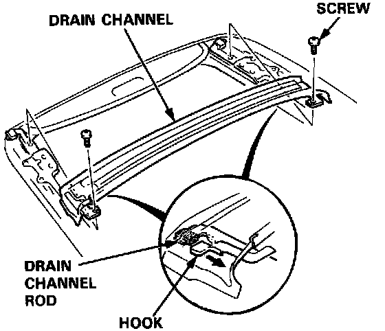
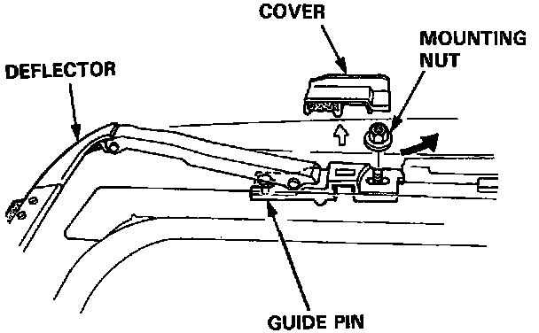
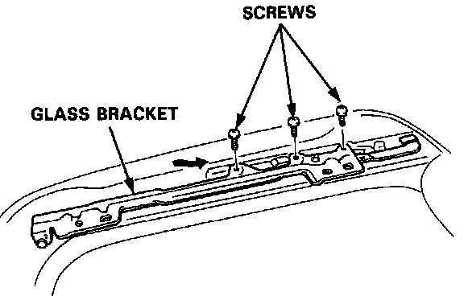
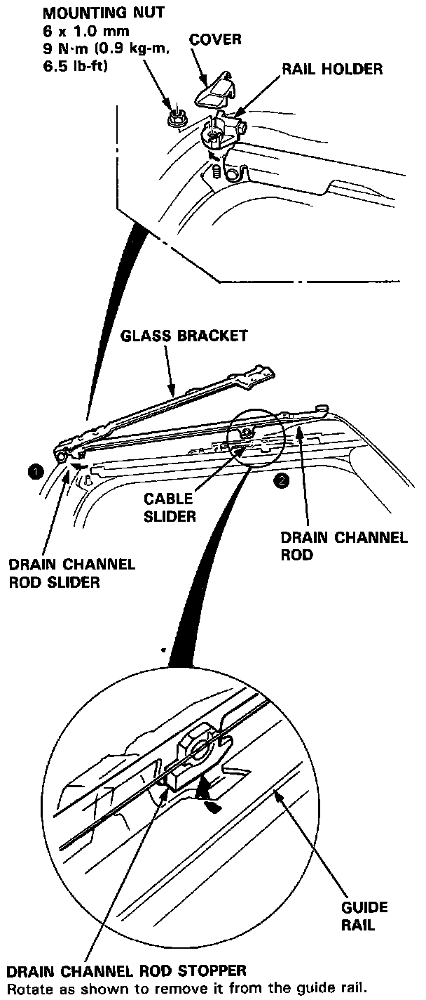
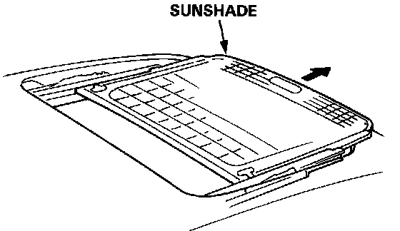

Glass Bracket/Sunshade Replacement
Glass Bracket/Sunshade Replacement1. Remove the glass.

2. Remove the screws and drain channel by sliding it forward.

3. Remove the covers and mounting nuts. Remove the deflector by sliding it backward.

4. Using the moonroof wrench, move the glass bracket to the position where the glass bracket normally pivots down and remove the screws.

5. Remove the cover and mounting nut, then remove the rail holder.
6. Remove the drain channel rod slider by moving the cable slider foward using the moonroof wrench.
7. Detach the drain channel rod stopper from the cutout of the guide rail.

8. Slide the sunshade forward, then remove it.
9. Install the sunshade in the reverse order of removal.
Check for smooth movement the sunshade.